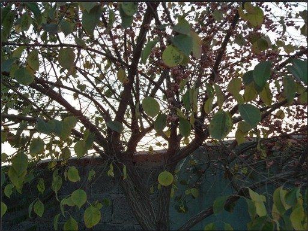
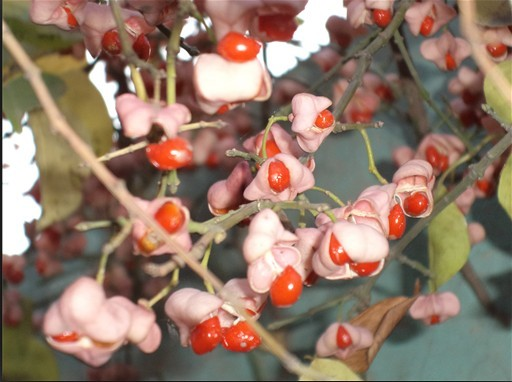

都不知道
都不知道图中是什么，猜对奖励鲜花5朵
截止日期2011年10月16日23:00


都不知道
引用：是一种东西（植物），上面是远处照的，下面的是近处照的，方便大家看清楚，好容易猜是什么
原文由 梧桐风 发表于 2011-10-16 9:25:33 :
［此帖子已被 蓝天蓝 在 2011-10-16 16:19:47 编辑过］
［此帖子已被 蓝天蓝 在 2011-10-16 16:20:15 编辑过］
引用：你真有才
原文由 掌棋宣传员 发表于 2011-10-16 13:23:07 :
植物
引用：师傅说的没错，是植物，猜它的果实叫什么名字
原文由 掌棋宣传员 发表于 2011-10-16 13:23:07 :
植物
他的名字叫。。。。。。。。。。。。。。。。。。
我也不知道。。。。。。。。。。。。。。。。。。。。 
［ 奇林 于 2011-10-21 1:09:40 时花20金币送鲜花一朵］
引用：
原文由 吉小鼠 发表于 2011-10-21 1:07:34 :他的名字叫。。。。。。。。。。。。。。。。。。
我也不知道。。。。。。。。。。。。。。。。。。。。
［ 奇林 于 2011-10-21 1:09:40 时花20金币送鲜花一朵］
 不知道还回帖 明显是赚金币的
不知道还回帖 明显是赚金币的引用：他们俩是兄妹，你放心~
原文由 掌棋如烟 发表于 2011-10-22 19:29:40 :